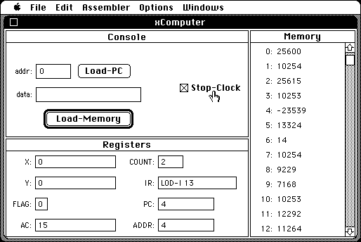

Download
xComputer.zip (57K) xComputer 1.2 repackaged into a zipped hfs disk image and checksum file. The disk image can be mounted with Mini vMac.
xComputer.hqx (82K) xComputer 1.2 in the original format.
copyright: David J. Eck
mod date: Jan 23, 1995
license: free for non-commercial use
official url :
Downloading TMCM Support Materials
“A ‘visable computer’ that simulates a computer with simple CPU and memory. It can be programmed in assembly language, and the execution of the programs can be followed in detail.” Written to accompany computer science textbook.

If you find these downloads useful, please consider helping the Gryphel Project, which hosts them.
Here are the md5 checksums for the downloads, signed with Gryphel Key 5:
--------- GRY SIGNED TEXT --------- f2d022a1b47ae77ea5f8c0c2644bd40d xComputer.zip 8fca1234f6307f165e9e7d731aefcb1d xComputer.hqx ------- BEGIN GRY SIGNATURE ------- Gry/4Xa8CFcUzxdN/LwCVrqAuq2mLFUHgn1UwLgttm1iMpVSQKMVOA0HgwvF7Hgb MOTLxHy/ZvSWAdnYxgq+lRcpPGqILPlXaRnWZYVXJ5DYB8wqxIjSQ/UyZCQRezF0 IPFTDlkX4Bb/ZH+9+WnLhuuFw1Sne0bHfdrxTMYoRco4usIhOKIXYTiUAuuESFb3 -------- END GRY SIGNATURE --------